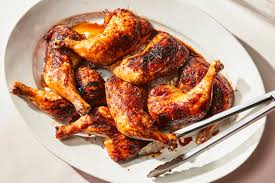

Chicken Legs with Red Wine

Description
Chicken Legs with Red Wine is a dish full of flavor. the chicken is seasoned with mediterranean ingredients like Rosemary, Thyme, Sage and Red Wine. The chicken will be served with rice cooked with onions and seasoned with salt and Thyme. the taste off these spices will connect the chicken with wine and make up for a great meal. easy to prepare and tasty.
before we start we need to prepare ourselves.
Ingredients
- Chicken Legs
- Rice
- Onions
- Grinded dry Garlic
- Olive Oil
- Salt
- Pepper
- Rosemary
- Sage
- Thyme
- Red Wine
Steps
- put rice in a pot and fill it with water (1 glass of rice, 2 glasses of water).
- cut onion and put it inside the pot with rice. cook the rice for around 10 minutes.
- put some olive oil on in the pen and place the chicken legs on top.
- put some salt on the chicken (its always best to pour salt on top and than help yourself with hands. this way the entire chicken will be covered in olive oil and salt).
- fire up the pen on the strongest fire you have and start preparing the seasoning.
- after first 3 or 4 minutes turn the chicken for the first time. the chicken should get a gentle yellow tone. we should not let the chicken fry for too long. make sure to turn it quick.
- the rice should finish soon. turn off the fire and let the rice sit for 10 minutes.
- repeat the previous step 6 and the chicken should be equally cooked on both sides.
- the gently cooked chicken is perfect to start seasoning even more. turn the fire down to almost minimum and start seasoning with pepper, Thyme, Sage and rosemary.
- pour some red wine on top of the chicken, put on cover for cooking on the pen and let it cook for 5 minutes. (you can put something underneath the cover to lift it up a bit).
- turn the chicken on the after side and cook it for another 4 to 5 minutes.
- lift the cover and put some dry garlic on the top and let it fry for 1 minute.
- turn the chicken and let it fry for another minute on the other side.
- the chicken is now finished! take out the chicken and fill the pen with rice.
- stir the rice so it absorbs all that is left from the chicken to give it an excellent flavor.
- enjoy your meal!